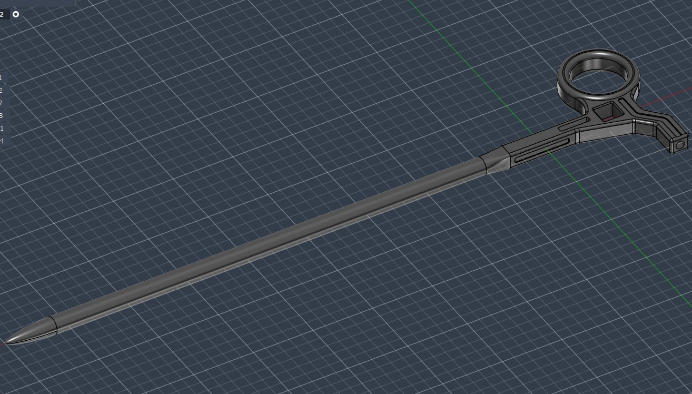

☯️🧬霊狐製作所 公式ツイッター
@Cheese_Ghostfox
大概是优化了人体工学与重心,调整了破窗锥至更合理的位置,把前版本的拟合曲线椭圆指环更改为了正圆(之前是抄了一把外科剪的人体工学设计,然而实践证明这并不舒服),将没卵用的外三角扳手换成了外四角曲柄适配器(也是国内常见的氧气瓶减压阀传动杆扳手),调整了氚管位置并为杆体与握柄之间添加了放样过渡,增加了一部分装饰性表面铣槽,以及大面积添加了倒角与圆角以优化把玩手感
那么,嘉立创,拜托了!
